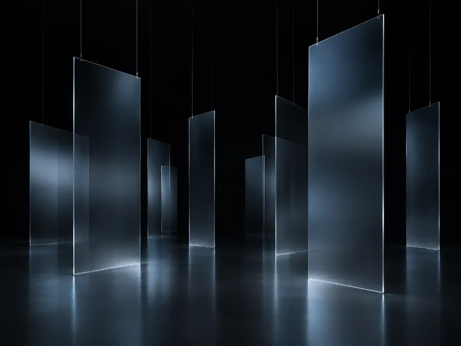

XT5蜂鸟部落
CADILLAC / 2024
EVENT EXPERIENCE
3D VISUALIZATION
EVENT EXPERIENCE
3D VISUALIZATION
HUMMINGBIRD TRIBE汽车活动 · 三维视觉
让影像有前后层次

悬挂竖屏借错层与缝隙形成纵深。从另一侧看，后排画面会从缝隙里出现，观看方式也从正面看舞台变成绕着影像走。
从山湖画面看到车身结构
山湖画面为发布现场建立全路况语境，车身结构则让观众能把话题落到车上。正面的舞台视角交代整车、屏幕与技术展示的关系。
项目影像
PROJECT
XT5 蜂鸟部落
BRAND / YEAR
CADILLAC / 2024
CATEGORY
Automotive / Event Experience
3D Visualization
3D Visualization